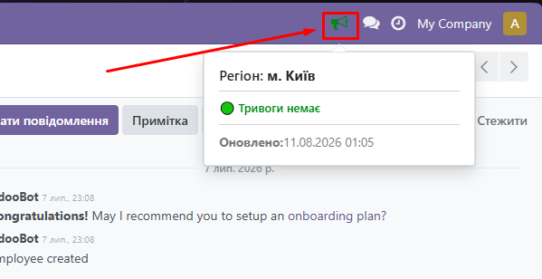
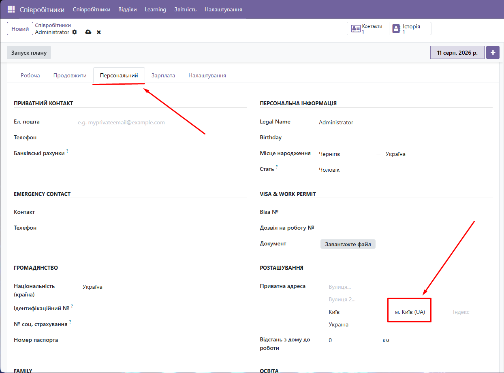

Ukraine Alarm додає до Odoo зручний індикатор стану повітряної тривоги для обраного регіону. Під час тривоги користувач побачить помітне сповіщення; модуль також може відтворювати звук та показувати анімацію, якщо ці можливості увімкнені у вашій конфігурації.

Індикатор у верхній панелі: швидке відображення стану обраного регіону.

Джерело звідки берется регіон співробітника
Модуль отримує інформацію з сервісу map.ukrainealarm.com. Для надійної роботи рекомендуємо використовувати власний API-ключ, отриманий у цього постачальника даних.
Отримати персональний API-ключ можно по посиланню https://api.ukrainealarm.comБезпека: не публікуйте свій API-ключ у відкритому доступі, не додавайте його до скриншотів, репозиторіїв чи публічних повідомлень.
Він може тимчасово з’являтися, коли модуль відображає кешовані дані. Це нормальна поведінка, яка допомагає зберігати стабільність роботи та зменшувати зайві звернення до API.
Перелік регіонів України додається разом із модулем. Їхні внутрішні коди використовуються для коректного запиту до API, тому не змінюйте та не видаляйте ці коди без розуміння наслідків. Неправильний код може призвести до відсутності або некоректності даних.
Якщо потрібна допомога з налаштуванням або ви знайшли помилку, зв’яжіться з розробником.
Email: anton.tytenko@gmail.com
Telegram: @ntoha2503
GitHub: GITHUB
Ukraine Alarm для Odoo. Дані надаються сервісом map.ukrainealarm.com.